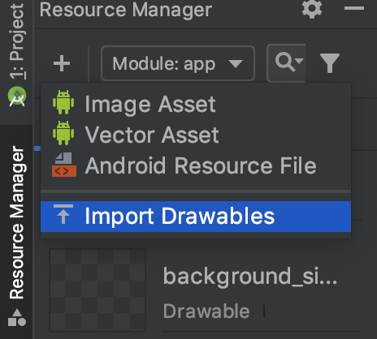
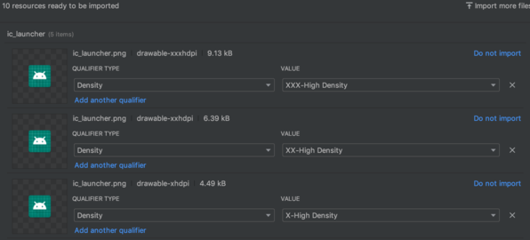

How to add an image to the "drawable" folder in Android Studio?
I need to add an image to the res/drawable folder...
When I choose new > Image Asset, it comes out a dialog to choose Asset
Type...
How can I add an image to res/drawable folder?
Answer
For Android Studio 1.5 :
- Right click on res -> new -> Image Asset
- On Asset type choose Action Bar and Tab Icons
- Choose the image path
- Give your image a name in Resource name
-
Next->Finish
Update for Android Studio 2.2 :
-
Right click on res -> new -> Image Asset
-
On Icon Type choose Action Bar and Tab Icons
-
On Asset type choose Image
-
On Path choose your image path
-
Next->Finish
The image will be saved in the /res/drawable folder.
Warning! If you choose to use images other than icons in SVG or PNG be aware that it could turn grey if the image is not transparent. You can find an answer in comments for this problem but none of these are verified by me because I never encountered this problem. I suggest you to use icons from here: Material icons
Suggest
For Android Studio 3.4+:
You can use the new Resource Manager tab Click on the + sign and select
Import Drawables.
From here, you can select multiple folders/files and it will handle everything for you.

The result will look something like this:

Click the import button and the images will be automatically imported to the
correct folder.